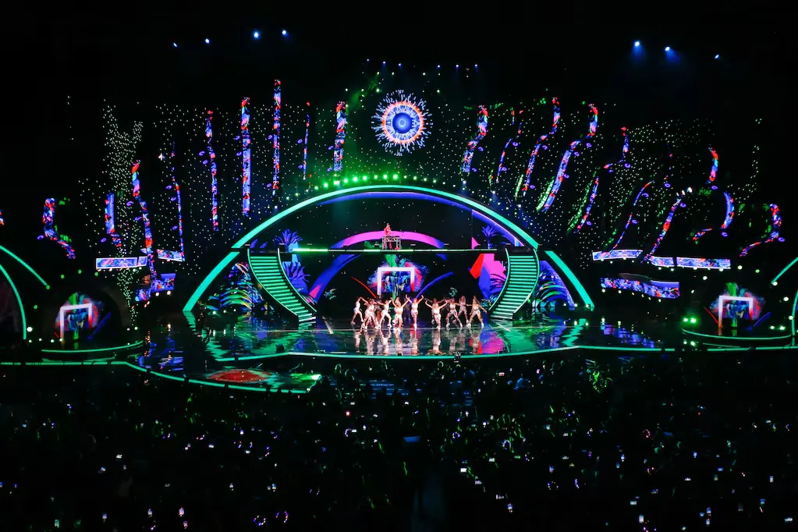
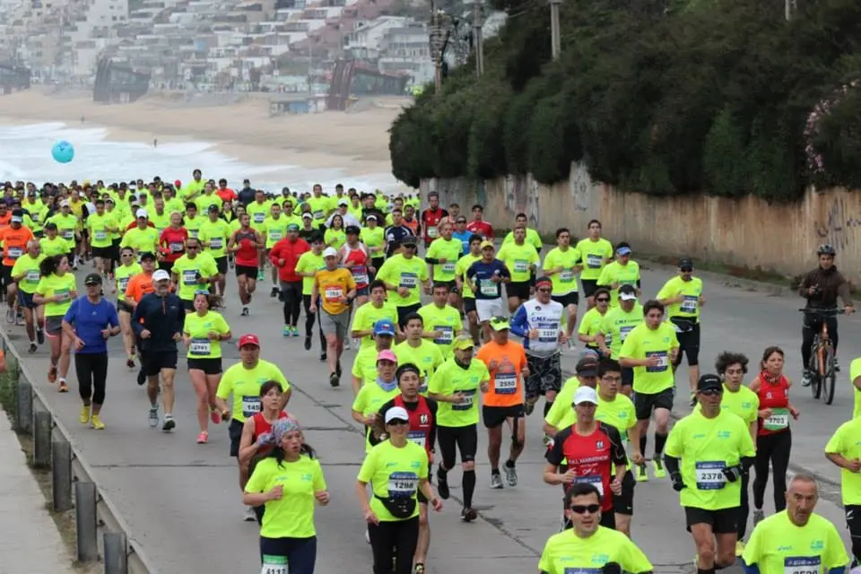

Looking for something to do?
Chilean Map


Viña del Mar Festival
Viña del Mar Festival
The Viña del Mar International Song Festival is the most important music event in Latin America, held annually at the Quinta Vergara Amphitheater since 1960. It attracts global artists, from emerging talents to renowned international stars, offering a mix of pop, rock, Latin, and folklore music. The festival's famous "Monstruo" audience passionately cheers or boos performances, influencing the event's atmosphere. Winners receive the coveted Silver, Gold, or Platinum Gaviota awards. Beyond music, the festival boosts tourism, drawing thousands of visitors to Viña del Mar, benefiting local businesses. This cultural celebration continues to shape the city's identity and reinforce its status as Chile's "Garden City."

Viña del Mar's Marathon